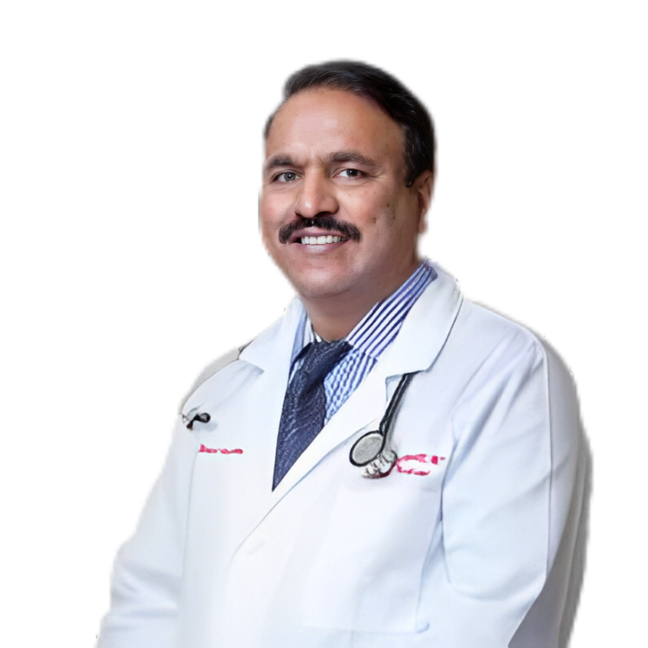
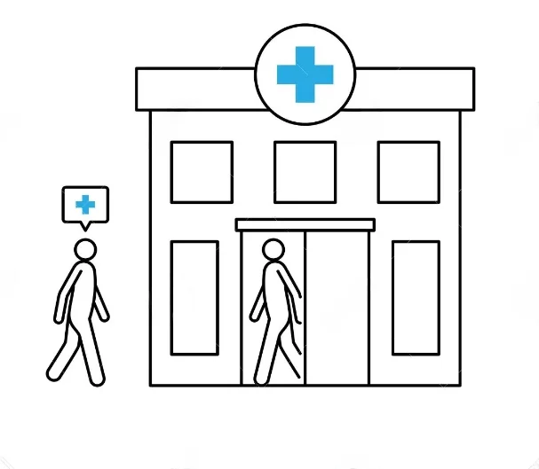

Introducing the Pillars of Excellence in Healthcare at Infinite Clinical Research
Get acquainted with our team of highly qualified and compassionate doctors who stand at the forefront of medical innovation and patient care. Each picture below is a testament to the commitment and expertise that defines the heart of PRX Research's promise to the community.

LATHA YEDLAPALLI, MD
Latha Yedlapalli, MD, is a respected and compassionate member of our medical team. With a Medical Degree from JSS Medical College, Latha Yedlapalli, MD combines her extensive medical knowledge with a patient-centered approach to healthcare.
Dedicated to excellence, Latha Yedlapalli, MD, is committed to providing exceptional medical services and staying current with the latest advancements in the field. Her warm and empathetic communication style allows her to connect deeply with her patients, ensuring they receive the best care possible.
As an integral part of our healthcare facility, Latha Yedlapalli, MD plays a vital role in our mission to deliver comprehensive healthcare services to our community. She believes in empowering patients with the information they need to make informed decisions about their health and well-being.
Beyond her medical practice, Latha Yedlapalli, MD actively engages in various community initiatives, reflecting her commitment to making a positive impact on the lives of others.
We are proud to have Latha Yedlapalli, MD, as a valued member of our healthcare team. Her dedication to excellence aligns perfectly with our commitment to providing top-tier medical services to our community.
INTERNAL MEDICINE
Latha Yedlapalli, MD, is a respected and compassionate member of our medical team. With a Medical Degree from JSS Medical College, Latha Yedlapalli, MD combines her extensive medical knowledge with a patient-centered approach to healthcare.
Dedicated to excellence, Latha Yedlapalli, MD, is committed to providing exceptional medical services and staying current with the latest advancements in the field. Her warm and empathetic communication style allows her to connect deeply with her patients, ensuring they receive the best care possible.
As an integral part of our healthcare facility, Latha Yedlapalli, MD plays a vital role in our mission to deliver comprehensive healthcare services to our community. She believes in empowering patients with the information they need to make informed decisions about their health and well-being.
Beyond her medical practice, Latha Yedlapalli, MD actively engages in various community initiatives, reflecting her commitment to making a positive impact on the lives of others.
We are proud to have Latha Yedlapalli, MD, as a valued member of our healthcare team. Her dedication to excellence aligns perfectly with our commitment to providing top-tier medical services to our community.
SRI VENKAT YEDLAPALLI, MD
Sri Venkat Yedlapalli, MD, is a highly respected board-certified internist with a distinguished career in medicine. With a strong commitment to patient care and a wealth of experience, he has made significant contributions to the field of internal medicine.
As a Board-Certified Internist, Sri Venkat Yedlapalli, MD, expertise is widely recognized. He has served as the Medical Director of Hospitalist Services, where his leadership and medical acumen have played a crucial role in enhancing patient care within our healthcare facility.
Sri Venkat Yedlapalli, MD, dedication to providing comprehensive healthcare is reflected in his patient-centered approach. He believes in delivering personalized medical services that address the unique needs of each patient. His commitment to staying current with the latest medical advancements ensures that patients receive the most up-to-date and effective treatments available.
Beyond his medical practice, Sri Venkat Yedlapalli, MD, is known for his contributions to medical research and education. He has been an active participant in community health initiatives, sharing his expertise to improve the well-being of others.
We are proud to have Sri Venkat Yedlapalli, MD, as a valuable member of our medical team. His leadership and commitment to excellence have made a significant impact on our ability to provide exceptional healthcare services to our community.
INTERNAL MEDICINE
Sri Venkat Yedlapalli, MD, is a highly respected board-certified internist with a distinguished career in medicine. With a strong commitment to patient care and a wealth of experience, he has made significant contributions to the field of internal medicine.
As a Board-Certified Internist, Sri Venkat Yedlapalli, MD, expertise is widely recognized. He has served as the Medical Director of Hospitalist Services, where his leadership and medical acumen have played a crucial role in enhancing patient care within our healthcare facility.
Sri Venkat Yedlapalli, MD, dedication to providing comprehensive healthcare is reflected in his patient-centered approach. He believes in delivering personalized medical services that address the unique needs of each patient. His commitment to staying current with the latest medical advancements ensures that patients receive the most up-to-date and effective treatments available.
Beyond his medical practice, Sri Venkat Yedlapalli, MD, is known for his contributions to medical research and education. He has been an active participant in community health initiatives, sharing his expertise to improve the well-being of others.
We are proud to have Sri Venkat Yedlapalli, MD, as a valuable member of our medical team. His leadership and commitment to excellence have made a significant impact on our ability to provide exceptional healthcare services to our community.

How it Works
- Find A Clinical Trial
Getting Started With A Clinical Trial Is Easy! We Offer Numerous Clinical Trials In Different Specialties.
Please Contact Us To See What We’re Offering. We’ll Ask You Some Questions To Determine What Studies
You’re Eligible For And If There’s A Study You Might Be Eligible For, We’ll Schedule An Appointment With
One Of Our Physicians.
- Physical Assessment
Visit our site and get a complimentary physical exam. We’ll answer any questions you have about
participating in one of our clinical trials.
- Start Participating
Participating in the clinical trial can begin once you’ve been considered eligible and agree to
participate in the study procedures.

FOR PATIENTS
Faciliating your Access to Clinical Resarch.
Have a query? Please check this question and answers
Why Clinical Research?
Every life-changing medical discovery begins with a clinical trial.
Our clinical trials are research studies designed to answer scientific questions and find better ways to prevent, screen for, diagnose or treat particular medical conditions. Our trials will evaluate these medical, surgical, or behavioral interventions. Researchers will use the data you provide us to find out if a new treatment, like a new drug, diet, or medical device (e.g. pacemaker), is safe and effective for people. Infinite Clinical offers access to cutting-edge medical care and medications not yet available in the market.
Faciliating your Access to Clinical Resarch.
Have a query? Please check this question and answers
Why Clinical Research?
Every life-changing medical discovery begins with a clinical trial.
Our clinical trials are research studies designed to answer scientific questions and find better ways to prevent, screen for, diagnose or treat particular medical conditions. Our trials will evaluate these medical, surgical, or behavioral interventions. Researchers will use the data you provide us to find out if a new treatment, like a new drug, diet, or medical device (e.g. pacemaker), is safe and effective for people. Infinite Clinical offers access to cutting-edge medical care and medications not yet available in the market.
What To Expect
What Should You Expect When Participating in a Clinical Research Study?
Did you know? Have you ever been sick and been prescribed medication by your physician? You have directly benefited from clinical research! The medications, therapies, and procedures that are available today are available because of prior clinical trials.
What Are Clinical Trials?
Our clinical trials are research studies designed to answer scientific questions and find better ways to prevent, screen for, diagnose or treat particular medical conditions. During our trials, we will evaluate these surgical, medical, and behavioral interventions. Researchers will use the data that you provide to find out if a new medical treatment, including drugs, diets, and medical devices (like pacemakers), is safe and effective. Infinite Clinical offers access to cutting-edge medical care and medications not yet available in the market. At Infinite Clinical, we are committed to the health and safety of our patients. Participants in our clinical trials have a unique opportunity to contribute to medical discovery, treatment, and research. Our participants are educated on the relevance of the study as it relates to the management of their conditions and overall health. They are also provided with quality care from our team of expert doctors and clinicians. Pharmaceutical companies, universities, and other healthcare organizations rely on Infinite Clinical for quality data and medical oversight for clinical trials.
Our clinical trials are research studies designed to answer scientific questions and find better ways to prevent, screen for, diagnose or treat particular medical conditions. During our trials, we will evaluate these surgical, medical, and behavioral interventions. Researchers will use the data that you provide to find out if a new medical treatment, including drugs, diets, and medical devices (like pacemakers), is safe and effective. Infinite Clinical offers access to cutting-edge medical care and medications not yet available in the market. At Infinite Clinical, we are committed to the health and safety of our patients. Participants in our clinical trials have a unique opportunity to contribute to medical discovery, treatment, and research. Our participants are educated on the relevance of the study as it relates to the management of their conditions and overall health. They are also provided with quality care from our team of expert doctors and clinicians. Pharmaceutical companies, universities, and other healthcare organizations rely on Infinite Clinical for quality data and medical oversight for clinical trials.
Contact
Thank you for your interest in Infinite Clinical Clinical Trials. We value your inquiries and are eager to assist you with any questions you may have. Feel free to reach out to us using the contact information provided below.